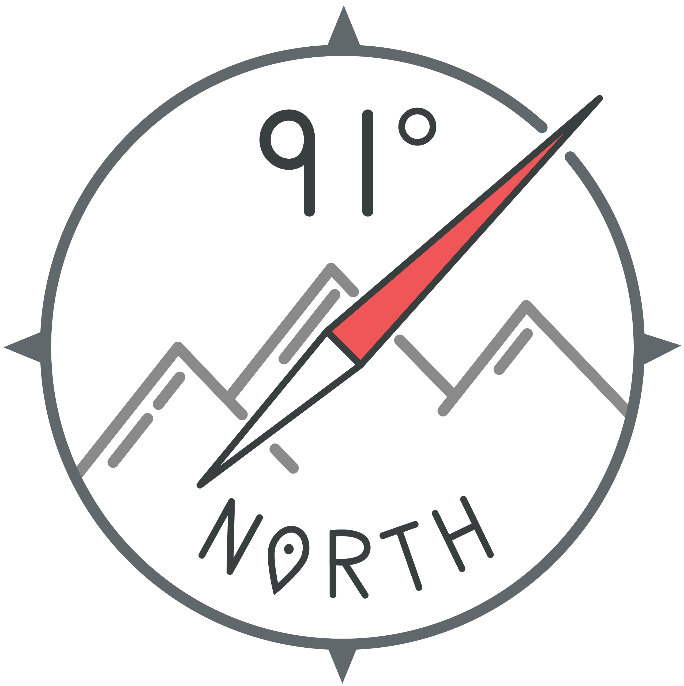

Hey, I’m Ben Thornton!
I’m a builder of things. I love building communities through organizing HackFSU, Florida Hackers, and studying Urban Planning. Helping people reach their full potential and creating tools for them to thrive is my passion.
Currently I am a Senior at Florida State University in Tallahassee, FL studying Geography, Urban Planning, and Entrepreneurship. I am working at the Florida Geographic Alliance as a Web Master and GIS Education Developer. I also work with the Florida Resources and Environmental Analysis Center as a cartographer, GIS analyst, and researcher on topics of Bivariate Mapping and Walkability.
On the weekends I travel to hackathons with Technole and Florida Hackers. At night, you can probably find me working at Domi Station.
I spend most of my time on Front-End development, ArcPy, and working in Illustrator with loads of vectors.
Currently trying to improve with these technologies:
- Javascript
- Mapbox Libraries
- Node.js
Let’s get in touch and build things together!
- Twitter: 91degn
- Instagram: 91degreesnorth
- Github: geofsu
- LinkedIn: benjaminwthornton